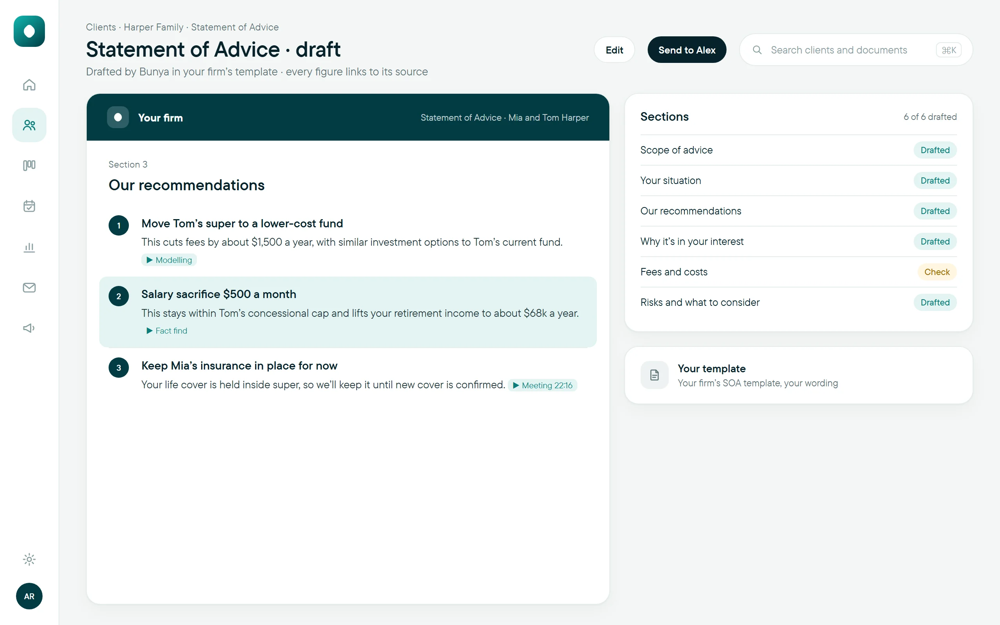

AI statement of advice drafting: what the software prepares and what the adviser decides
A faster first draft only helps if checking it is faster too. Here is how to keep the adviser in charge of an AI-drafted SOA.

Can AI write a statement of advice?
An AI statement of advice tool can draft the SOA in your firm’s template from a confirmed fact find, the modelling and the adviser’s strategy. It can’t decide the advice or judge whether it suits the client. A paraplanner or the adviser checks every figure and recommendation, and only the version the adviser approves goes to the client.
- An AI-drafted SOA is only as good as its inputs: lock the fact find and the strategy first.
- Every figure in the draft should trace back to a source the reviewer can open in one step.
- Measure time to an approved SOA, including corrections, not the seconds it takes to generate a draft.
Why are advice firms looking at AI statement of advice drafting?
The strategy meeting went well. The clients know what they want, you know what you’ll recommend, and they’re keen to get on with it. Then the file joins the queue. Three weeks later the SOA is still with paraplanning, the clients are emailing to ask where it’s up to, and you’re rewriting the same “your situation” section you’ve written a hundred times.
That wait is why AI statement of advice drafting gets so much attention. Given the right inputs, AI can assemble the draft in your template: the client’s situation, the recommendations, the reasons, the risks. It’s a real time saving on the writing.
You’ll see tools promise an SOA “in one click”. Starting a draft can be one instruction. Producing advice that’s correct, suitable and ready for the client to sign never is. The adviser’s judgement, and their obligations, including the best interests duty, don’t move to the software.
What does an AI-drafted SOA need before it starts?
Most problems in an AI draft start upstream. Agree the inputs before anything is drafted:
- A confirmed fact find. Current, complete and checked with the client. A fact find that shows where each answer came from makes the later review much faster.
- The modelling, with the adviser’s assumptions. Current and proposed positions, with the assumptions written down.
- The adviser’s strategy and scope. What is being recommended, what isn’t, and why. This is the adviser’s decision, not the tool’s.
- The approved meeting record. The client’s own words on goals and concerns, from a checked file note rather than a raw transcript.
- Your firm’s template. So the draft reads like your firm, with your wording and structure.
Missing or conflicting information should come back as a question for a person. A tool that quietly fills a gap with a plausible guess is the one to avoid.
Which parts of the SOA can AI prepare, and which stay with the adviser?
| Part of the SOA | AI can prepare | The adviser decides |
|---|---|---|
| Scope of advice | Wording from the adviser’s recorded scope. | What the advice covers and excludes. |
| Your situation | A summary from the confirmed fact find. | Whether it’s current and complete. |
| Recommendations | A clear write-up of the strategy. | The strategy itself. |
| Why it’s in your interest | Reasons linked to the client’s goals and the modelling. | Whether the reasoning actually holds for this client. |
| Fees and costs | Figures placed from the firm’s records. | That every figure is right and complete. |
| Risks | Relevant risks drafted from the template and the strategy. | That the risks fit this client and nothing is missing. |
If you can’t fill in the right-hand column for a tool you’re considering, ask the supplier to show you where those decisions happen.
How should an adviser review an AI-drafted SOA?
A polished document isn’t evidence that anything was checked. Use this review checklist on every draft, whether it goes to a paraplanner first or straight to the adviser:
- Trace the figures. Open the source for every balance, contribution, fee and projection. If you can’t find it, it doesn’t stay.
- Read the recommendations against your strategy. Same products, same amounts, same timing.
- Test the reasons. Are they specific to this client, or could they sit in anyone’s SOA?
- Look for silent gap-filling. Check anything the fact find didn’t cover: did the draft assume an answer?
- Check consistency after edits. Change one figure and it may appear in four sections.
- Check fees, costs and risks last, slowly. These are where generic text does the most damage.
- Record the review. Who checked which version, what changed, and who approved it.
What happens when two sources disagree?
Mara Holloway at Aynub Financial, a fee-for-service practice in Kingaroy, is preparing advice for Priya and Arjun Shah. In last year’s fact find, Arjun planned to retire at 65. In this year’s strategy meeting, the approved file note records the couple’s new plan: Priya at 60, Arjun at 63.
The mismatch is flagged before Mara locks the fact find. She confirms the new ages with the Shahs by email, updates the fact find, and the modelling and draft are prepared from the confirmed version.
The review still matters. Reading the draft, the paraplanner notices Priya’s salary is last year’s figure: a pay rise mentioned in a phone call was never added to the fact find, so nothing flagged it. She sends it back to Mara, the figure is confirmed and corrected, and the affected sections are checked again. Only then does Mara approve the SOA.
The lesson: automated flags help, but the review can’t depend on them. The same discipline applies to the meeting record that feeds the draft, covered in our guide to AI meeting notes for financial advisers.
How do you test an AI SOA tool before using it on live advice?
Ask for a demonstration with a prepared sample file, then push past the clean example:
- Give it a fact find with a missing answer and see what the draft does.
- Include two sources that disagree.
- Reject a draft and ask for a correction. How long does the loop take?
- Click a figure. Can you get to its source in one step?
- Check who can read, edit and approve at each step, and where drafts and approvals are stored.
- Separate what you saw demonstrated from what is in your proposed scope.
For a pilot, compare similar advice on the old and new process. Record time to first draft, review time, correction cycles and issues found at review. A small pilot shows direction; it doesn’t prove a saving across all your advice.
ASIC’s Report 798, Beware the gap, reviewed how 23 AFS and credit licensees use and govern AI. It’s useful reading when you write your firm’s own rules for AI-drafted documents. It doesn’t certify any product or workflow.
A next step you can take this week: pick your last three SOAs and note where the time went, from strategy meeting to signature. That shows whether drafting is really your bottleneck, or whether it’s the fact find, the checking or the signing.
How Bunya drafts statements of advice
The SOA generator is an Advice Engine feature, now in pilot with early firms. It drafts the SOA using your firm’s own SOA template, whether that’s in Word or PDF, from the confirmed fact find, the strategy and modelling and the adviser’s strategy. Every figure links to the fact find, the modelling or the meeting it came from, and each recommendation is linked to its reasons.
Your firm decides the handover: the draft goes to a paraplanner to refine, or straight to the adviser to check. The adviser approves it before it goes to the client, who then signs by e-signature or in Client Portal. Every Bunya starts with Command Centre, from $3 per client household a month, and you add only the Advice Engine features you need. If you’re with a licensee, we ask them to approve it first. Less time drafting, more time on the advice.
Common questions
Will an AI-drafted SOA be the same every time?
Not necessarily. A template and set instructions keep the structure consistent, but the wording still depends on the inputs and the model. That’s another reason every draft is reviewed.
Do paraplanners still have a role if AI drafts the SOA?
Yes. Many firms will send the draft to a paraplanner to refine before the adviser sees it. The work shifts from writing from a blank template to checking, correcting and improving a draft.
Can AI decide which source is correct when they conflict?
It can flag a possible conflict, but a plausible reading isn’t confirmation. The adviser resolves it, usually with the client, and the fact find is updated before the draft is prepared again.
Who is responsible for an AI-drafted statement of advice?
The adviser who provides the advice. Using AI to prepare the document doesn’t change who is accountable for its accuracy or for whether the advice is appropriate for the client.
Does AI drafting suit a firm that writes only a few SOAs a year?
It can, but the set-up effort matters more when volume is low. Compare the time spent on your recent SOAs with what a pilot shows before deciding.
Should clients be told AI helped prepare their SOA?
Check your licensee’s policy and your privacy notices, which should reflect how you handle client information. Whatever you decide, the adviser’s review and approval is what the client relies on.
Sources and scope
- ASIC: Obligations when giving financial advice (the best interests duty) Checked 11 November 2026
- ASIC Report 798: Beware the gap, governance arrangements in the face of AI innovation Checked 11 November 2026
General information about advice workflows, not legal or financial advice; adapt it to your licensee’s requirements and your own obligations.